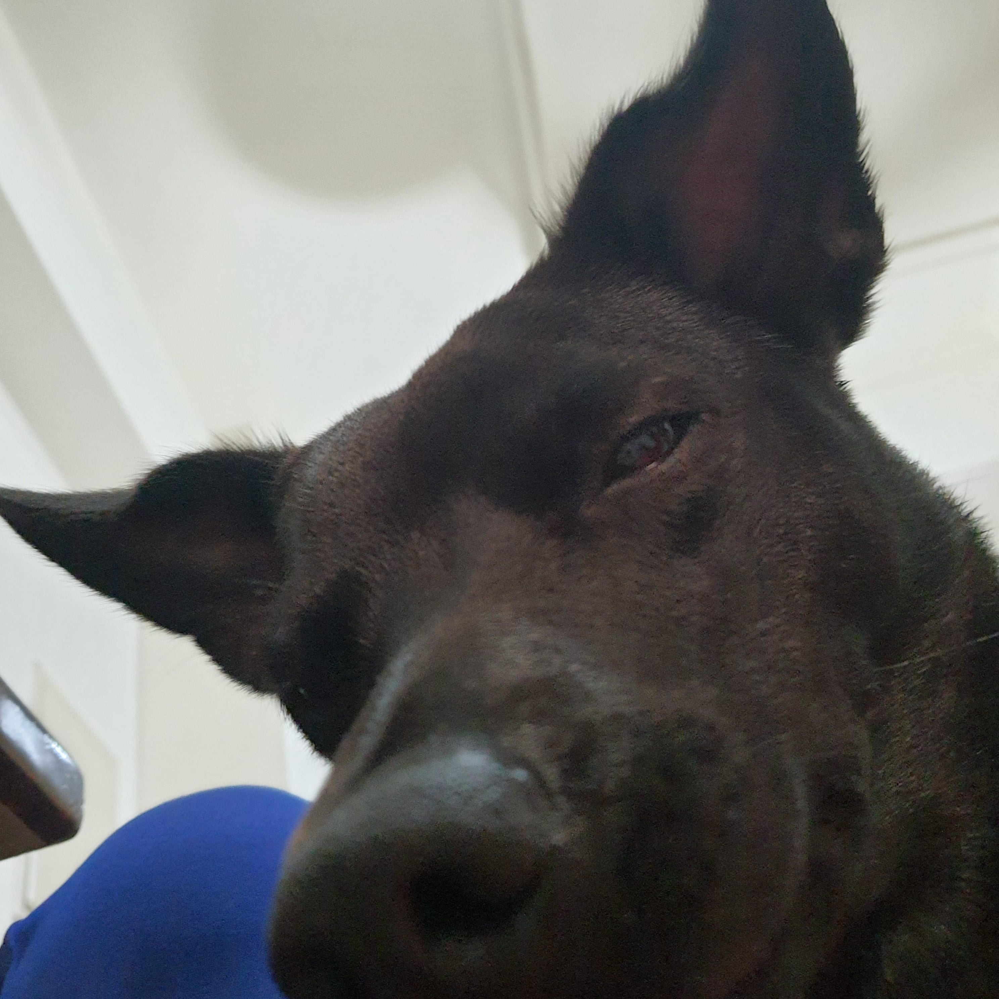
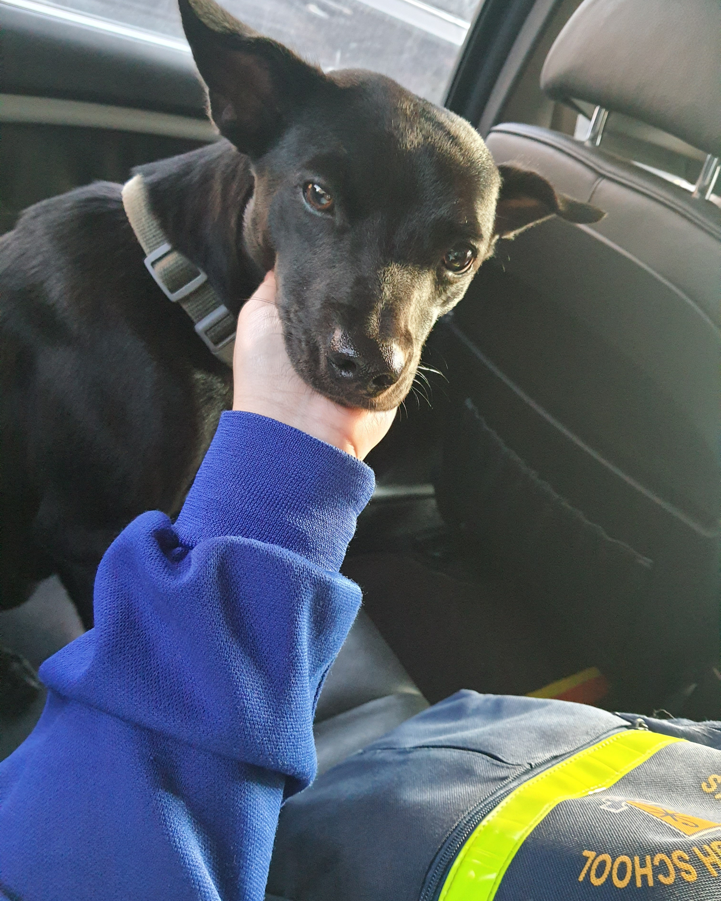
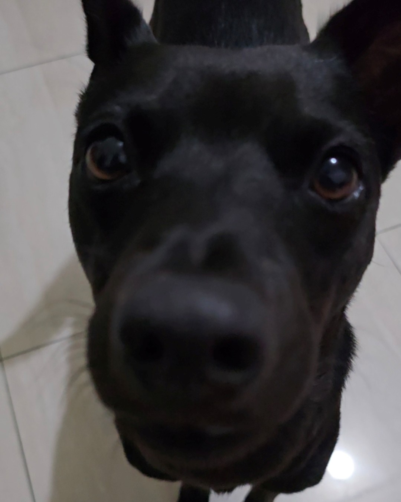
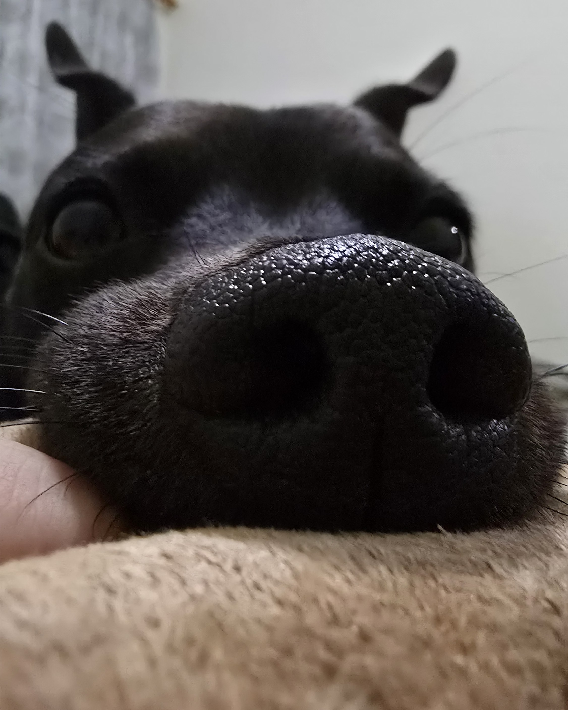

🪪 基本資料

- 姓名：九毫米(子彈9mm)
- 年齡：3 歲的小公主
- 體重：15 公斤挑食ing
- 性格：像我大學喜怒無常的組員
🔍 特殊能力

- 藍芽耳機：聽見撕零食包裝的聲音會自動飛奔過來。但平時叫她，她一律假裝沒聽到，跟藍芽一樣斷開連結。
- 噪音式電風扇：只要看見有人在吃東西，就會默默坐到旁邊，不給她吃還會故意發出嘆氣聲，上輩子應該是電風扇很吵。
- 芝麻湯圓：在外是個I狗、別隻狗靠近都會嚇到的俗辣，一回到家立刻會鬧小脾氣跟咬到湯圓一樣陰我一下。
🧾 每日任務

- 帶刷皮克敏：時間一到就會準時咬著牽繩，站在門口表示出門，感覺手機給她都可以種皮克敏了。
- NPC模式：只要家門口有機車經過一定會立刻大叫，固定刷新。
- 小牌大耍：如果全家人都在忙不理她，會直接拿玩具砸在別人的身上，在熟人面前毫無禮貌。